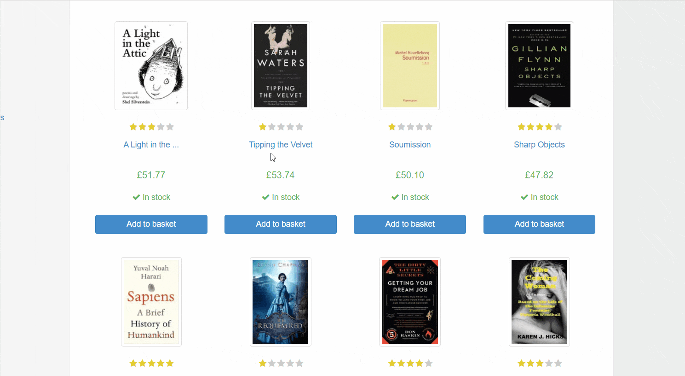

<html><head><title>The Dormouse's story</title></head>
<body>
<p class="title"><b>The Dormouse's story</b></p>
<p class="story">Once upon a time there were three little sisters; and their names were
<a href="http://example.com/elsie" class="sister" id="link1">Elsie</a>,
<a href="http://example.com/lacie" class="sister" id="link2">Lacie</a> and
<a href="http://example.com/tillie" class="sister" id="link3">Tillie</a>;
and they lived at the bottom of a well.</p>
</body></html>9 Web Scraping and Textual Analytics
Learning Objectives of the Chapter
At the End of the Chapter, Students should be Able to -
Gain an understanding about web scraping and its importance
Understand the website structures for web scraping
Use Python modules to scrape websites
Scrape
EDGARwebsite to extract quantitative and qualitative data of different companiesPerform textual analytics on different text data scraped from website
9.1 What is Web Scraping?
Web scraping refers to the techniques of accessing websites and collecting information from them. Having web scraping knowledge is important nowadays because a vast amount of data is available on websites and in many occasions we need to access, collect, and analyze those data. Web scraping is also called “web harvesting” or “web data extraction”.
Web scraping is employed in different kinds of practical applications. For example, companies scrape websites of their competitors to keep track of their pricing, which can help companies to form a competitive pricing strategy. Moreover, marketers and analysts scrape different social media platforms to analyze public sentiment about their products, brands, or events, which help them to gauge public opinions and ultimately tailor their products or services to meet or exceed customers’ expectations.
9.2 Legal and Ethical Consideration of Web Scraping
As good citizens on the internet, it is incumbent on us to respect the policies of the websites we plan to scrape. Therefore, before we decide to scrape a website, we must take into consideration the legal and ethical aspects of scraping.
9.2.1 Legal Framework of Web Scraping
Before scraping a website, we must evaluate the following legal considerations -
Terms of Service: Please check the terms of service of the website because some sites explicitly prohibit scraping and violating terms of service might result in legal action.
Copyright Law: In most cases, data published online is protected by copyright. As such, it is important to know beforehand what you can legally collect from the website by scraping and how you can use the scraped data.
Computer Fraud and Abuse Act (CFAA): In the US, the Computer Fraud and Abuse Act (CFAA) was enacted in 1986. The CFAA prohibits intentionally accessing a computer without authorization or in excess of authorization. You might violate CFAA if a website has taken steps to block scraping and you circumvent those measures.
Data Protection Law: Beacause of different kinds of data protection law such as General Data Protection Regulation (GDPR) in Europe or similar law in other jurisdictions, it has become very critical to deal with personal data. If you scrape personal data, you must comply with such laws, which typically include requirements for consent, data minimization, and secure handling of the data.
9.2.2 Ethical Considerations of Web Scraping
In addition to legal considerations, you should also behave ethically when you try to scrape a website. Ethical considerations though aligns with legal considerations, they extend to the idea of good citizenship on the web. Some important ethical considerations during webscraping include -
Web scraping might be equivalent to Distriubted of Denial of Service (DDOS) attack if too many requests are sent to the targeted websites, thus disrupting the regular functioning of the website. Therefore, while web scraping, we should scrape in such a way so that it does not disrupt the usage of the website by other legitimate users. Further, you should not try to scrape a website if it prohibits web scraping. Some websites have
robots.txtfile, which defines what can be scraped from the website. So please invesitage a website well before you decide to scrape it.How the scraped data will be used is an important considerations even if the data are publicly available. Using the web scraped data in a way that is detrimental to individual or businesses is unethical. Further, you should also consider the ramifications of publishing or sharing the scraped data.
9.3 Understanding HTML and CSS Selectors
Websites are usually created by using HTML - HyperText Markup Language, which describes the structure of a web page and includes cues for the apperance of a website. Therefore, having some knowledge on HTML will help you to scrape a website. HTML document uses different kinds of tags to identify or refer to different elements. A typical HTML document has following elements -
<!DOCTYPE> : Defines the document type
<html> : Defines the HTML document
<head> : Contains metadata or information for the document
<body> : Defines the document body such as text, images, and other media
More about HTML tags can be found here. Here is an example of a basic HTML structure -
In addition to HTML tags, CSS (Cascading Style Sheets) selectors are used to style different elements in the website. In web scraping, we use CSS selectors to identify the data we want to extract. There are different types of CSS selectors:
Element Selector: Selects all elements of a specific type. For example,
pselects all<p>elements.ID Selector: Selects a single element with a specific id. The ID selector is defined with a hash (
#). For example,#navbarselects the element withid="navbar".Class Selector: Selects all elements with a specific class. The class selector is defined with a dot (
.). For example,.menu-itemselects all elements withclass="menu-item".Attribute Selector: Selects elements with a specific attribute or attribute value. For example,
[href]selects all elements with anhrefattribute.
Below is an example of CSS selectors -
<!DOCTYPE html>
<html>
<head>
<style>
#header {
background-color: #f2f2f2;
}
.highlight {
font-weight: bold;
}
a[href^="https"] {
color: green;
}
</style>
</head>
<body>
<div id="header">This is the header</div>
<p class="highlight">This paragraph is highlighted.</p>
<a href="https://example.com">This link is green because it uses HTTPS.</a>
</body>
</html> In the above code, #header selects the <div> with the ID of “header,” .highlight selects any element with the “highlight” class, and a[href^="https"] selects anchor tags (<a>) whose href attribute value begins with “https”. Understanding how to use these CSS selectors are very important while web scraping websites.
9.4 An Overview of Beautiful Soup
Beautifulsoup is a python module that is widely used to scrape and parse websites. Beautifulsoup has many useful functions that can be easily used to extract data from HTML. Figure 9.1 shows the basic work process Beautifulsoup uses. It is clear from Figure 9.1 that using Beautifulsoup, we can extract data by finding HTML tag names, by CSS class names, and so on.

The following python code can be run to install and import Beautifulsoup module.
# installing beautifulsoup
pip install beautifulsoup4
# importing beautifulsoup
from bs4 import BeautifulSoup When we use BeautifulSoup to scrape a website, one of the most critical tasks is to identify the tags or CSS selectors from which we want to extract text or data. These targets are called Document Object Model (DOM). The DOM is a programming interface for web documents. Visualize HTML code of a webpage as an upside-down tree. Each HTML element - headings, paragraphs, and links - is a node in the tree. Figure 9.2 shows a basic tree structure of an HTML page.

9.4.1 An Example of Web Scraping
Below we provide a small example of webscraping. We create a webpage called html, which includes different tags and CSS selectors.
# an HTML file data
html = """
<html><head><title>The Dormouse's story</title></head>
<body>
<p class="title"><b>The Dormouse's story</b></p>
<p class="story">Once upon a time there were three little sisters; and their names were
<a href="http://example.com/elsie" class="sister" id="link1">Elsie</a>,
<a href="http://example.com/lacie" class="sister" id="link2">Lacie</a> and
<a href="http://example.com/tillie" class="sister" id="link3">Tillie</a>;
and they lived at the bottom of a well.</p>
</body></html>""" Then we import BeautifulSoup from beautifulsoup.
# importing beautiful soup
from bs4 import BeautifulSoup Next, we convert the html into beautifulsoup object and name it soup. In BeautifulSoup ()function, we use the built-in parser called html.parser. We can also use other parsers such as lxml or html5lib. Each of these parsers has their own pros and cons. For example, lxml is the fastest and html.parser does not need extra dependencies.
# Converting HTML data into Beautiful Soup Object
soup = BeautifulSoup(html, "html.parser") The prettify() function will turn a soup object into a nicely formatted Unicode string, witha a separate line for each tag and each string.
soup.prettify()'<html>\n <head>\n <title>\n The Dormouse\'s story\n </title>\n </head>\n <body>\n <p class="title">\n <b>\n The Dormouse\'s story\n </b>\n </p>\n <p class="story">\n Once upon a time there were three little sisters; and their names were\n <a class="sister" href="http://example.com/elsie" id="link1">\n Elsie\n </a>\n ,\n <a class="sister" href="http://example.com/lacie" id="link2">\n Lacie\n </a>\n and\n <a class="sister" href="http://example.com/tillie" id="link3">\n Tillie\n </a>\n ;\nand they lived at the bottom of a well.\n </p>\n </body>\n</html>\n' We can use get_text() function to see the text element of the tags. text is a property (attribute) of soup object, which calls get_text function.
soup.get_text()"\nThe Dormouse's story\n\nThe Dormouse's story\nOnce upon a time there were three little sisters; and their names were\nElsie,\nLacie and\nTillie;\nand they lived at the bottom of a well.\n"soup.text"\nThe Dormouse's story\n\nThe Dormouse's story\nOnce upon a time there were three little sisters; and their names were\nElsie,\nLacie and\nTillie;\nand they lived at the bottom of a well.\n"print(soup.text)
The Dormouse's story
The Dormouse's story
Once upon a time there were three little sisters; and their names were
Elsie,
Lacie and
Tillie;
and they lived at the bottom of a well.
To see the title of the document, we run the following codes -
# Navigating to Specific Tags
soup.head.title<title>The Dormouse's story</title># Getting Text from a Specific Tag
soup.head.title.text"The Dormouse's story" To see the text, from a tag, we run the following code -
soup.body.a.text'Elsie' To see the text, from p tag, we run the following code -
soup.body.p.text"The Dormouse's story"9.6 Scrape a Website Using BeautifulSoup
We have mastered some basic knowledge of Beautifulsoup. Therefore, it is now time to put our knowledge into practice. We are going to parse a website, which includes information about books. We would like to extract some data from the website. The data include - book url, title of the book, ratings of the book, price, and availability of the book. Before we start scraping the website, we need to identify the tags or CSS selectors that are relevant for our targeted data. Figure 9.3 shows how we can identify the tags or selectors relevant for our search. We should hover our cursor over the information that we plan to extract and then click right button of the mouse (on Windows) and click "inspect". Then we can see all tags and CSS selectors and other tags of the website. Figure 9.3 visualizes the whole process.

First, we need to import necessary python modules. We use requests module to get the website information.
# importing requests
import requests
# importing beautifulsoup
from bs4 import BeautifulSoup
# importing pandas
import pandas as pd Then, we convert the data into soup object.
# Fetch the website page
url = 'https://books.toscrape.com/catalogue/page-1.html'
html = requests.get(url)
page = html.text
# Converting it into Soup Object
soup = BeautifulSoup(page, "html.parser") After inspecting the tags and CSS selectors, we identify that article tag and product_pod class contains the information that we would like to extract. We use the find function from beautifulsuop to see our expected data. As noted before, find function identifies the first instance of the elements whereas find_all identifies all elements of the parsed HTML.
soup.find("article", class_="product_pod")<article class="product_pod">
<div class="image_container">
<a href="a-light-in-the-attic_1000/index.html"><img alt="A Light in the Attic" class="thumbnail" src="../media/cache/2c/da/2cdad67c44b002e7ead0cc35693c0e8b.jpg"/></a>
</div>
<p class="star-rating Three">
<i class="icon-star"></i>
<i class="icon-star"></i>
<i class="icon-star"></i>
<i class="icon-star"></i>
<i class="icon-star"></i>
</p>
<h3><a href="a-light-in-the-attic_1000/index.html" title="A Light in the Attic">A Light in the ...</a></h3>
<div class="product_price">
<p class="price_color">£51.77</p>
<p class="instock availability">
<i class="icon-ok"></i>
In stock
</p>
<form>
<button class="btn btn-primary btn-block" data-loading-text="Adding..." type="submit">Add to basket</button>
</form>
</div>
</article>soup.find_all("article", class_="product_pod") Next, we check the url of each book. The a tag defines a hyperlink and the href is an attribute of a tag. Below, we use a tag to identify the link of each book.
books = soup.find_all("article", class_="product_pod")source_url = "https://books.toscrape.com/catalogue"# Book url
for h in soup.find_all("article", class_="product_pod"):
print(source_url+"/"+h.find('a')['href'])https://books.toscrape.com/catalogue/a-light-in-the-attic_1000/index.html
https://books.toscrape.com/catalogue/tipping-the-velvet_999/index.html
https://books.toscrape.com/catalogue/soumission_998/index.html
https://books.toscrape.com/catalogue/sharp-objects_997/index.html
https://books.toscrape.com/catalogue/sapiens-a-brief-history-of-humankind_996/index.html
https://books.toscrape.com/catalogue/the-requiem-red_995/index.html
https://books.toscrape.com/catalogue/the-dirty-little-secrets-of-getting-your-dream-job_994/index.html
https://books.toscrape.com/catalogue/the-coming-woman-a-novel-based-on-the-life-of-the-infamous-feminist-victoria-woodhull_993/index.html
https://books.toscrape.com/catalogue/the-boys-in-the-boat-nine-americans-and-their-epic-quest-for-gold-at-the-1936-berlin-olympics_992/index.html
https://books.toscrape.com/catalogue/the-black-maria_991/index.html
https://books.toscrape.com/catalogue/starving-hearts-triangular-trade-trilogy-1_990/index.html
https://books.toscrape.com/catalogue/shakespeares-sonnets_989/index.html
https://books.toscrape.com/catalogue/set-me-free_988/index.html
https://books.toscrape.com/catalogue/scott-pilgrims-precious-little-life-scott-pilgrim-1_987/index.html
https://books.toscrape.com/catalogue/rip-it-up-and-start-again_986/index.html
https://books.toscrape.com/catalogue/our-band-could-be-your-life-scenes-from-the-american-indie-underground-1981-1991_985/index.html
https://books.toscrape.com/catalogue/olio_984/index.html
https://books.toscrape.com/catalogue/mesaerion-the-best-science-fiction-stories-1800-1849_983/index.html
https://books.toscrape.com/catalogue/libertarianism-for-beginners_982/index.html
https://books.toscrape.com/catalogue/its-only-the-himalayas_981/index.html# Book url (Alternative)
for h in soup.find_all("article", class_="product_pod"):
print(h.h3.find('a')['href'])a-light-in-the-attic_1000/index.html
tipping-the-velvet_999/index.html
soumission_998/index.html
sharp-objects_997/index.html
sapiens-a-brief-history-of-humankind_996/index.html
the-requiem-red_995/index.html
the-dirty-little-secrets-of-getting-your-dream-job_994/index.html
the-coming-woman-a-novel-based-on-the-life-of-the-infamous-feminist-victoria-woodhull_993/index.html
the-boys-in-the-boat-nine-americans-and-their-epic-quest-for-gold-at-the-1936-berlin-olympics_992/index.html
the-black-maria_991/index.html
starving-hearts-triangular-trade-trilogy-1_990/index.html
shakespeares-sonnets_989/index.html
set-me-free_988/index.html
scott-pilgrims-precious-little-life-scott-pilgrim-1_987/index.html
rip-it-up-and-start-again_986/index.html
our-band-could-be-your-life-scenes-from-the-american-indie-underground-1981-1991_985/index.html
olio_984/index.html
mesaerion-the-best-science-fiction-stories-1800-1849_983/index.html
libertarianism-for-beginners_982/index.html
its-only-the-himalayas_981/index.html# Book Title
for h in soup.find_all("article", class_="product_pod"):
print(h.h3.find('a')['title'])A Light in the Attic
Tipping the Velvet
Soumission
Sharp Objects
Sapiens: A Brief History of Humankind
The Requiem Red
The Dirty Little Secrets of Getting Your Dream Job
The Coming Woman: A Novel Based on the Life of the Infamous Feminist, Victoria Woodhull
The Boys in the Boat: Nine Americans and Their Epic Quest for Gold at the 1936 Berlin Olympics
The Black Maria
Starving Hearts (Triangular Trade Trilogy, #1)
Shakespeare's Sonnets
Set Me Free
Scott Pilgrim's Precious Little Life (Scott Pilgrim #1)
Rip it Up and Start Again
Our Band Could Be Your Life: Scenes from the American Indie Underground, 1981-1991
Olio
Mesaerion: The Best Science Fiction Stories 1800-1849
Libertarianism for Beginners
It's Only the Himalayas# ratings
soup.find('p', class_='star-rating')['class'][1]'Three'# price
soup.find('p', class_='price_color').get_text().replace("Â",'')'£51.77'# availability
soup.find('p', class_='instock availability').get_text().replace('\n','').strip()'In stock'9.6.1 Putting All of the Above Actions Together
In Section 9.6, we identify and extract individual tags and data that we want to extract. Now, we will put all of them together and create a data frame. For this purpose, we will use for loop.
# Fetch the Page
url = 'https://books.toscrape.com/catalogue/page-1.html'
html = requests.get(url)
page = html.text
# Parse HTML Content
soup = BeautifulSoup(page, "html.parser")
# Information We need
book_url = []
title = []
ratings = []
price = []
availability = []
# Extract listings from the page
books = soup.find_all("article", class_="product_pod")
source_url = "https://books.toscrape.com/catalogue"
for book in books:
# extract book url
book_url_text = source_url+"/"+book.find('a')['href']
book_url.append(book_url_text)
# extract title
title_text = book.h3.find('a')['title']
title.append(title_text)
# extract ratings
ratings_text = book.find('p', class_='star-rating')['class'][1]
ratings.append(ratings_text)
# extract price
price_text = book.find('p', class_='price_color').get_text().replace("Â",'')
price.append(price_text)
# extract availability
availability_text = book.find('p', class_='instock availability').get_text().replace('\n','').strip()
availability.append(availability_text)
# Creating the Data Frame
pd.DataFrame({
'book_url':book_url,
'title':title,
'ratings':ratings,
'price':price,
'availability':availability
})| book_url | title | ratings | price | availability | |
|---|---|---|---|---|---|
| 0 | https://books.toscrape.com/catalogue/a-light-i... | A Light in the Attic | Three | £51.77 | In stock |
| 1 | https://books.toscrape.com/catalogue/tipping-t... | Tipping the Velvet | One | £53.74 | In stock |
| 2 | https://books.toscrape.com/catalogue/soumissio... | Soumission | One | £50.10 | In stock |
| 3 | https://books.toscrape.com/catalogue/sharp-obj... | Sharp Objects | Four | £47.82 | In stock |
| 4 | https://books.toscrape.com/catalogue/sapiens-a... | Sapiens: A Brief History of Humankind | Five | £54.23 | In stock |
| 5 | https://books.toscrape.com/catalogue/the-requi... | The Requiem Red | One | £22.65 | In stock |
| 6 | https://books.toscrape.com/catalogue/the-dirty... | The Dirty Little Secrets of Getting Your Dream... | Four | £33.34 | In stock |
| 7 | https://books.toscrape.com/catalogue/the-comin... | The Coming Woman: A Novel Based on the Life of... | Three | £17.93 | In stock |
| 8 | https://books.toscrape.com/catalogue/the-boys-... | The Boys in the Boat: Nine Americans and Their... | Four | £22.60 | In stock |
| 9 | https://books.toscrape.com/catalogue/the-black... | The Black Maria | One | £52.15 | In stock |
| 10 | https://books.toscrape.com/catalogue/starving-... | Starving Hearts (Triangular Trade Trilogy, #1) | Two | £13.99 | In stock |
| 11 | https://books.toscrape.com/catalogue/shakespea... | Shakespeare's Sonnets | Four | £20.66 | In stock |
| 12 | https://books.toscrape.com/catalogue/set-me-fr... | Set Me Free | Five | £17.46 | In stock |
| 13 | https://books.toscrape.com/catalogue/scott-pil... | Scott Pilgrim's Precious Little Life (Scott Pi... | Five | £52.29 | In stock |
| 14 | https://books.toscrape.com/catalogue/rip-it-up... | Rip it Up and Start Again | Five | £35.02 | In stock |
| 15 | https://books.toscrape.com/catalogue/our-band-... | Our Band Could Be Your Life: Scenes from the A... | Three | £57.25 | In stock |
| 16 | https://books.toscrape.com/catalogue/olio_984/... | Olio | One | £23.88 | In stock |
| 17 | https://books.toscrape.com/catalogue/mesaerion... | Mesaerion: The Best Science Fiction Stories 18... | One | £37.59 | In stock |
| 18 | https://books.toscrape.com/catalogue/libertari... | Libertarianism for Beginners | Two | £51.33 | In stock |
| 19 | https://books.toscrape.com/catalogue/its-only-... | It's Only the Himalayas | Two | £45.17 | In stock |
9.6.2 Doing the Same Things for All Pages
In Section 9.6.1, we scrape the first page of the website, but now we would like to scrape all pages of the website.
url1 = 'https://books.toscrape.com/catalogue/page-'
pages = range(51)
url2 = '.html'
# Information We need
book_url = []
title = []
ratings = []
price = []
availability = []
# Some other Information
source_url = "https://books.toscrape.com/catalogue"
for page in pages:
url = url1+str(page)+url2
r = requests.get(url)
soup = BeautifulSoup(r.text, 'html.parser')
books = soup.find_all("article", class_="product_pod")
for book in books:
# extract book url
book_url_text = source_url+"/"+book.find('a')['href']
book_url.append(book_url_text)
# extract title
title_text = book.h3.find('a')['title']
title.append(title_text)
# extract ratings
ratings_text = book.find('p', class_='star-rating')['class'][1]
ratings.append(ratings_text)
# extract price
price_text = book.find('p', class_='price_color').get_text().replace("Â",'')
price.append(price_text)
# extract availability
availability_text = book.find('p', class_='instock availability').get_text().replace('\n','').strip()
availability.append(availability_text)
# Creating the Data Frame
pd.DataFrame({
'book_url':book_url,
'title':title,
'ratings':ratings,
'price':price,
'availability':availability
})| book_url | title | ratings | price | availability | |
|---|---|---|---|---|---|
| 0 | https://books.toscrape.com/catalogue/a-light-i... | A Light in the Attic | Three | £51.77 | In stock |
| 1 | https://books.toscrape.com/catalogue/tipping-t... | Tipping the Velvet | One | £53.74 | In stock |
| 2 | https://books.toscrape.com/catalogue/soumissio... | Soumission | One | £50.10 | In stock |
| 3 | https://books.toscrape.com/catalogue/sharp-obj... | Sharp Objects | Four | £47.82 | In stock |
| 4 | https://books.toscrape.com/catalogue/sapiens-a... | Sapiens: A Brief History of Humankind | Five | £54.23 | In stock |
| ... | ... | ... | ... | ... | ... |
| 995 | https://books.toscrape.com/catalogue/alice-in-... | Alice in Wonderland (Alice's Adventures in Won... | One | £55.53 | In stock |
| 996 | https://books.toscrape.com/catalogue/ajin-demi... | Ajin: Demi-Human, Volume 1 (Ajin: Demi-Human #1) | Four | £57.06 | In stock |
| 997 | https://books.toscrape.com/catalogue/a-spys-de... | A Spy's Devotion (The Regency Spies of London #1) | Five | £16.97 | In stock |
| 998 | https://books.toscrape.com/catalogue/1st-to-di... | 1st to Die (Women's Murder Club #1) | One | £53.98 | In stock |
| 999 | https://books.toscrape.com/catalogue/1000-plac... | 1,000 Places to See Before You Die | Five | £26.08 | In stock |
1000 rows × 5 columns